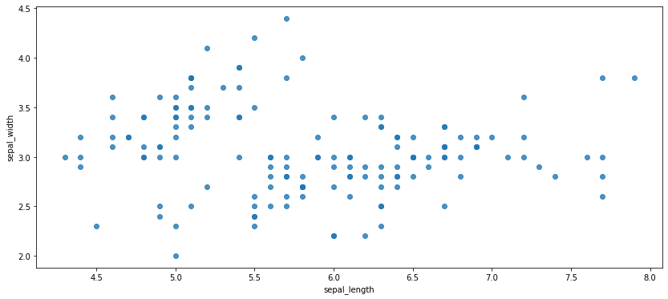
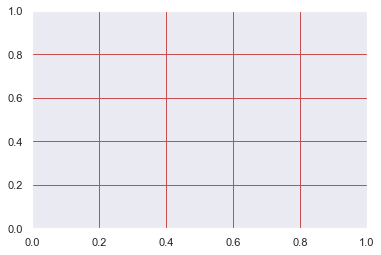
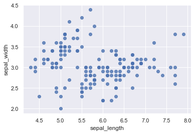
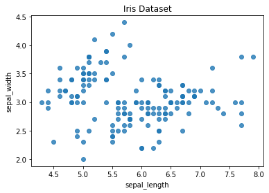
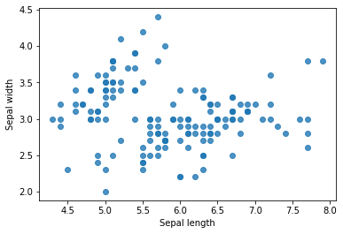
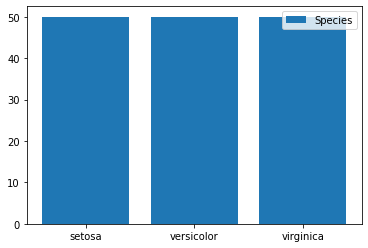

Visualization Settings
Contents
Visualization Settings#
import seaborn as sns
import matplotlib.pyplot as plt
df = sns.load_dataset('iris')
df.head()
| sepal_length | sepal_width | petal_length | petal_width | species | |
|---|---|---|---|---|---|
| 0 | 5.1 | 3.5 | 1.4 | 0.2 | setosa |
| 1 | 4.9 | 3.0 | 1.4 | 0.2 | setosa |
| 2 | 4.7 | 3.2 | 1.3 | 0.2 | setosa |
| 3 | 4.6 | 3.1 | 1.5 | 0.2 | setosa |
| 4 | 5.0 | 3.6 | 1.4 | 0.2 | setosa |
Visualization Frame#
Figure Size#
plt.figure(figsize=(14, 6))
sns.regplot(x=df["sepal_length"], y=df["sepal_width"], fit_reg=False)
plt.show()

Grid#
plt.grid(color='r', linestyle='-', linewidth=1)

#or
sns.set(style="darkgrid")
sns.regplot(x=df["sepal_length"], y=df["sepal_width"], fit_reg=False)
plt.show()

Title#
sns.regplot(x=df["sepal_length"], y=df["sepal_width"], fit_reg=False)
plt.title("Iris Dataset")
plt.show()

Axis Labels#
sns.regplot(x=df["sepal_length"], y=df["sepal_width"], fit_reg=False)
plt.xlabel("Sepal length")
plt.ylabel("Sepal width")
plt.show()

Legend#
plt.bar(df["species"].unique(), df["species"].value_counts())
plt.legend(["Species"])
plt.show()

Color#
Single Color#
plt.bar(df["species"].unique(), df["species"].value_counts(), color="green")
<BarContainer object of 3 artists>
Color Palette#
# plot with colormap virdis
sns.barplot(x=df["species"].unique(), y=df["species"].value_counts(), palette="viridis")
<AxesSubplot:ylabel='species'>